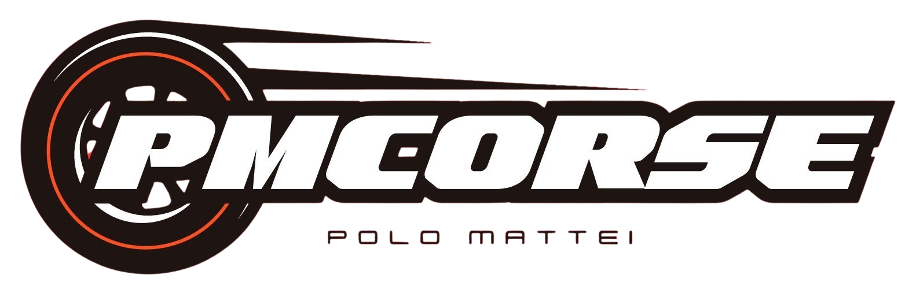

P.M. CORSE
WELCOME TO OUR TEAM!

We are a group of students and professors, united by the passion for innovation, technology, and teamwork.
Together, we have formed a team with the ambitious goal
of winning the international competition "F1 in Schools".
This project offers us the opportunity to combine theory and practice, blending our technical
and creative skills to design and build single-seater mini-cars for amazing performances in
official competitions.
Our team is not just a group; it's a real family. Every member contributes ideas and skills
to a common vision, proving that collaboration, commitment, and determination can lead us
to achieve extraordinary results. We represent the best of our school in this unique challenge.
Our team was born in 2023 with the passion and goal of excelling in this extraordinary
competition. From the start, we faced every challenge with determination! We qualified in March 2024 and raced the semi-finals in April 2024.
Our team was made up of five members, each playing a key role to ensure the success of the project: the mechanical designer
was responsible for the technical implementation of our model; the Fluid Dynamics Analyst optimized aerodynamics
to maximize performance; the marketing manager and business manager worked together to promote the team and manage resources;
finally, the project manager coordinated the group, making sure that every aspect was aligned with the objectives.
PM Corse is the demonstration that passion, commitment and collaboration are the engine of success!
OUR GOALS
This year for the second consecutive year we will participate in the project
proposed by the school and organized by Innovation farm called"F1 IN SCHOOLS",
and our goals will be more ambitious than ever.
- Reaching and winning the national finals, the most prestigious national goal for this competition.
- Promoting dialogue and collaboration with local business entities, enhancing the contribution of the territory to our project.
- Adopting innovative and ecological solutions: we are committed to combining creativity and sustainability in every design choice.